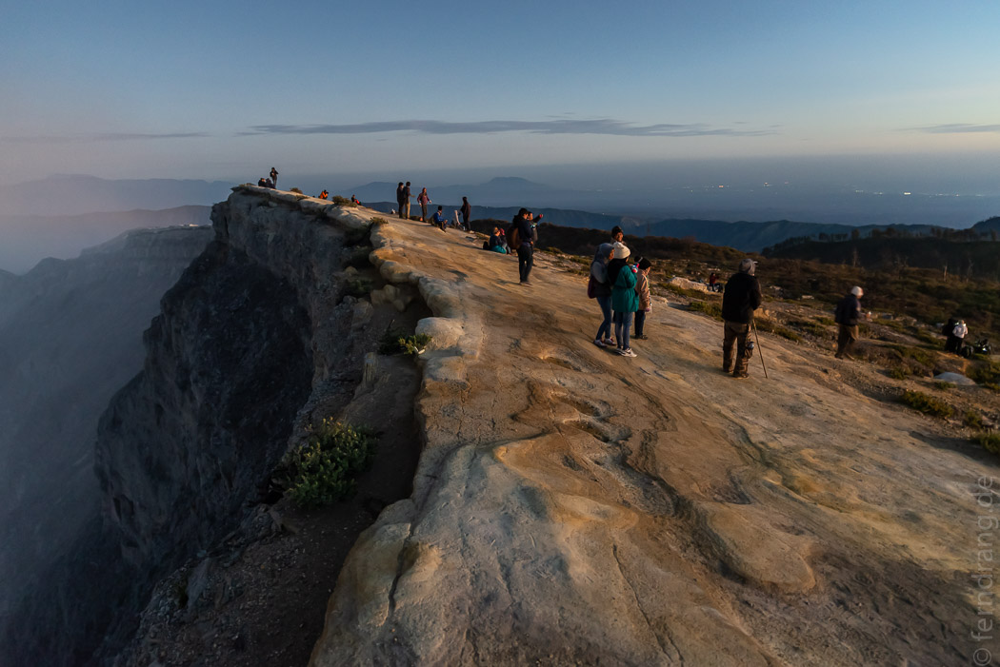

Wir hatten nach unserer Nachtwanderung noch genügend Zeit in Cemoro Lawang um gemütlich zu frühstücken und zu packen. Danach wurden wir auch schon abgeholt. Der Weg zum Mount Ijen zieht sich mit öffentlichen Verkehrsmitteln. Deshalb haben wir das als Tour gemacht. Die Fahrt im rappligen Minibus hat sich dann allerdings auch ganz schön gezogen.
Am späten Nachmittag sind wir in Sempol in der Nähe des Berges angekommen. Dort war es nicht ganz so hoch und nicht ganz so kalt wie am Bromo. Theoretisch ist das Setting ganz ähnlich. Der Ijen liegt als kleinerer, jüngerer Vulkan in einer größeren Caldera, die ein Vorgänger hinterlassen hat. Aber hier ist schon lange Wald über die Sache gewachsen, so dass es nicht so deutlich zutage tritt. Die Unterkunft Arabica Guesthouse ist eine Katastrophe. Die Anlage hat den Charme einer staatlichen Einrichtung und die Zimmer sind schimmelig. Allerdings gibt es hier nicht viel Auswahl. Glücklicherweise brauchten wir das Bett nicht lange.
Schon um 1 Uhr nachts ging es weiter. Am Eingang zum Ijen-Park war es trotz nächtlicher Stunde voll wie auf dem Rummelplatz. Überall trotteten schläfrige Touristen (vor allem einheimische) aus ihren Autos und wurden von Verkäufern und Guides umwuselt. Unsere Gruppe war glücklicherweise recht fit, so dass wir ein gutes Tempo anschlagen konnten. Der Weg ging steil bergauf und wir mussten Hunderte Menschen überholen - oft ganze Familien, die mit Oma und Säugling im Gepäck einen Familienausflug zur Schwefelmine machen.
Am Kraterrand wurde es Zeit für die Atemmasken, die wir ausgeliehen bekommen hatten. Anfangs kam uns das übertrieben vor, da die Wolke nicht viel fauliger war als am Bromo. Wenn allerdings mal der Wind dreht, wird der Nutzen recht schnell klar. Die zweite Hälfte der Wanderung ging dann wieder bergab, in den Krater hinein. In der Dunkelheit konnten wir weit vor uns und tief unter uns im Schein der Taschenlampen die gelb-qualmende Hölle der Schwefelmine erkennen.
Mit tränenden Augen haben wir den steilen Pfad ertastet. Immer wieder sind uns Minenarbeiter mit ihrer unnatürlich gelben Last entgegen gekommen. Der Schwefel liegt in zwei Körben, die an einer Stange befestigt sind. Mit bis zu 80kg auf den Schultern kämpfen sich die Arbeiter in Gummistiefeln nur mit einem Tuch vor dem Mund aus dem Krater heraus. Viel schlimmere Arbeitsbedingungen kann es kaum geben. Ich werde beim nächsten Mal daran denken, wenn im Büro die Milch ausgeht.
Im dunkeln konnten wir den extrem sauren See gar nicht erkennen, an dessen Ufer die Schwefelmine liegt. Das berühmte Blaue Feuer brodelte überirdisch blau am Hang. Zwischendurch löschen die Arbeiter das Feuer. Aber die verflüssigten Schwefelgase entzünden sich an der Luft immer wieder von selbst. Vor Jahrzehnten haben Waghalsige dicke Rohre verlegt, die das heiß austretende Schwefelgas auffangen und umlenken. In den Röhren kondensiert das Schwefelgas und wird in wild rauchenden Tonnen aufgefangen. Die Gasmasken haben sich dort dann doch als sehr hilfreich erwiesen. Der flüssige Schwefel ist noch dunkel-orange bis er zu grellgelben Brocken erkaltet, die von den Arbeitern mit einer Brechstange herausgeschlagen werden. Dieser industrielle Touch macht den ohnehin schon eigenartigen Ort endgültig zu einer kleinen Hölle.
Zum Himmel war es von dort aber nicht weit. Wir waren extra schnell gegangen, um Zeit zu haben zum Sonnenaufgang am anderen Ende des Kraterrands zu sein. Als sich der Tag dann mit grünen Farben vorsichtig ankündigte, und kurz später die Landschaft in zartem rosa erblühte, schien nichts ferner als eine fiese, kleine Schwefelmiene.
Der türkis-grüne See wurde erst später sichtbar, als die Wolken aus dem Krater verflogen waren. Der fast zauberhafte Anblick täuschte leicht darüber hinweg, dass die Brühe mit einem pH-Wert unter 1 ähnlich bekömmlich wie Batteriesäure ist.